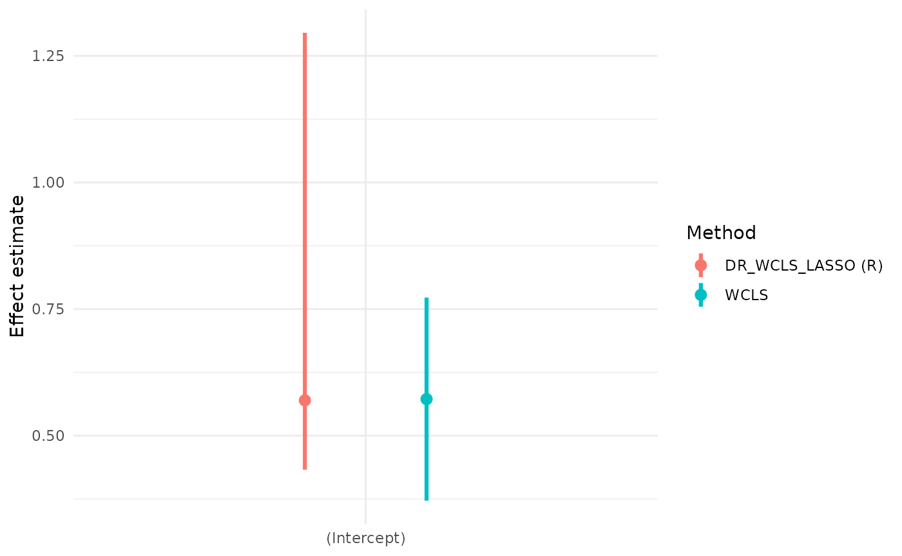
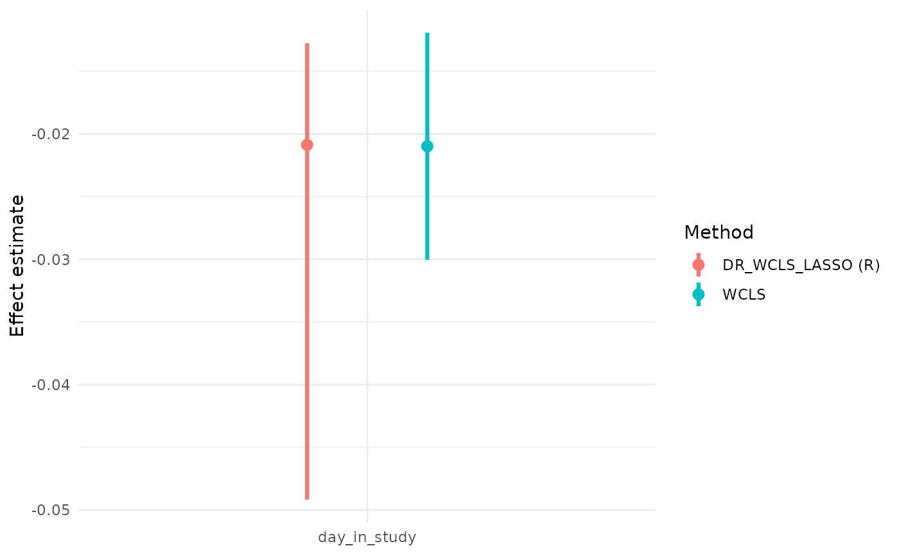
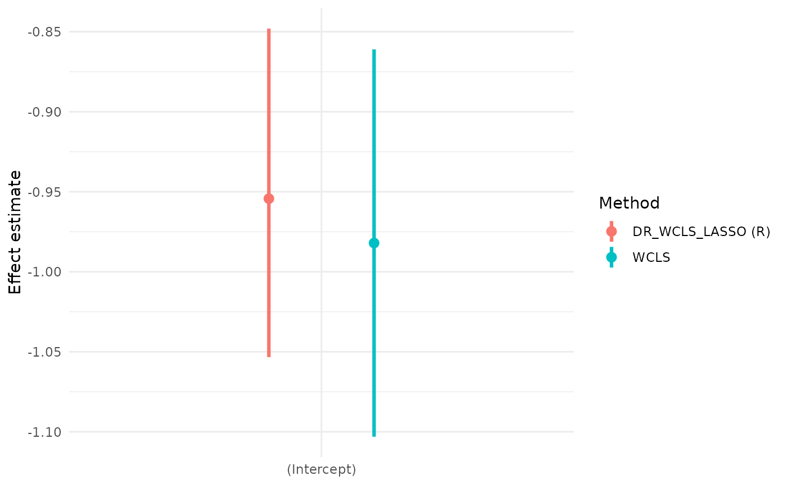
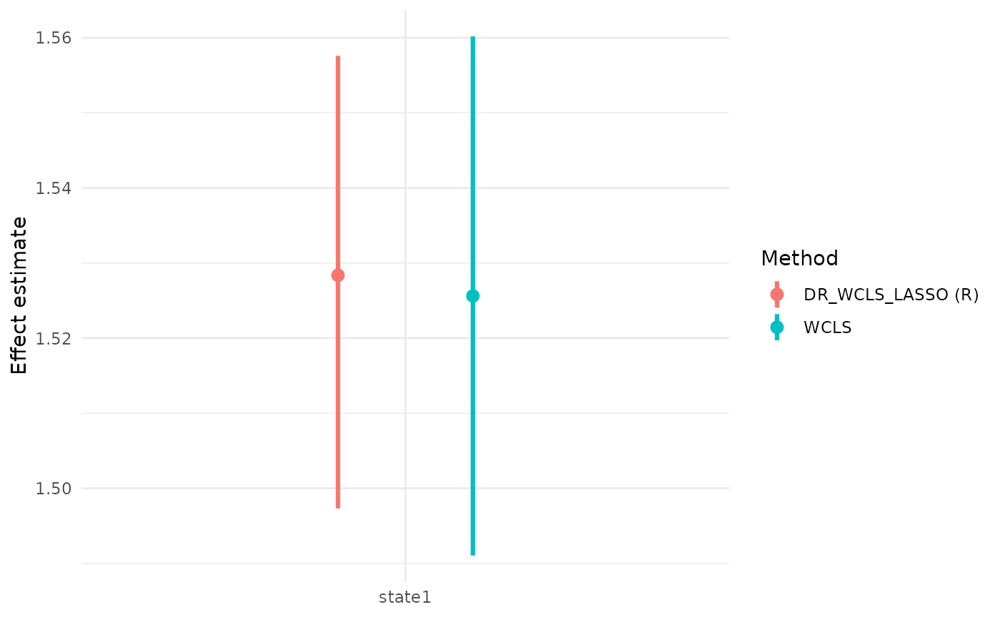
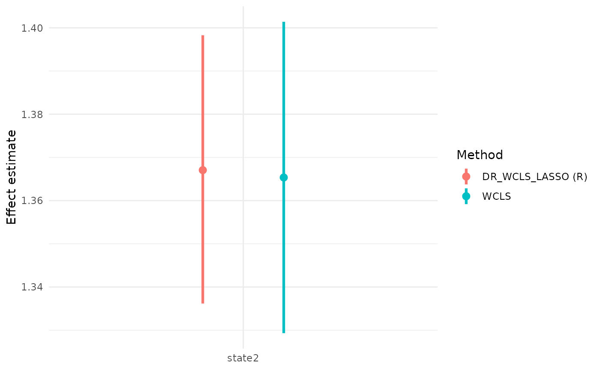
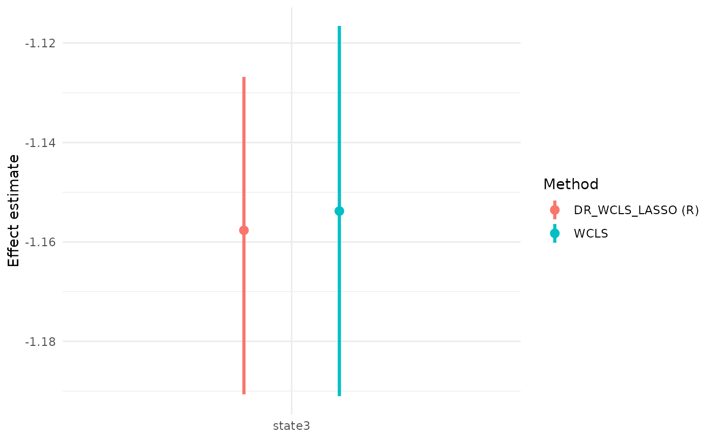
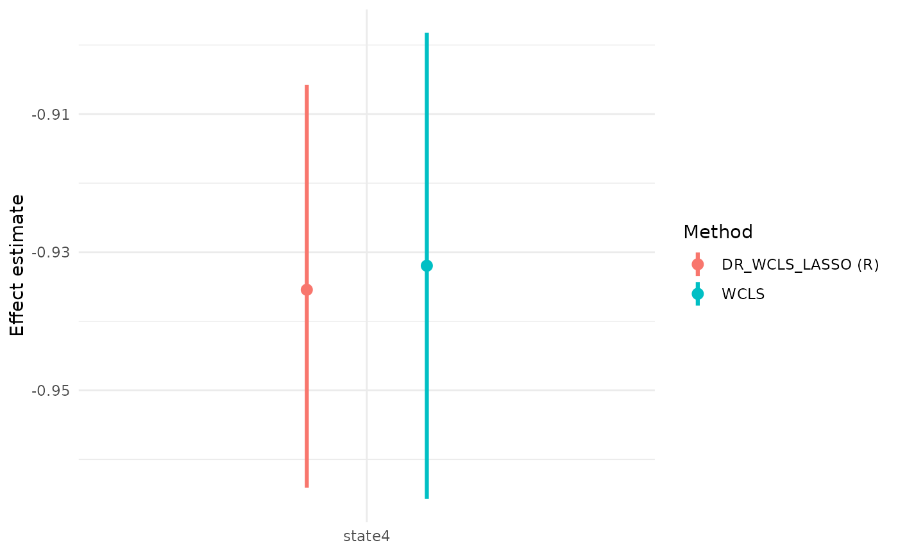

MRTpostInfLASSO
tutorial.RmdIntroduction
Micro-randomized trials (MRTs) are designed to evaluate the effectiveness of mobile health (mHealth) interventions delivered via smartphones. In practice, the assumptions required for MRTs are often difficult to satisfy: randomization probabilities can be uncertain, observations are frequently incomplete, and prespecifying features from high-dimensional contexts for linear working models is also challenging. To address these issues, the doubly robust weighted centered least squares (DR-WCLS) framework provides a flexible procedure for variable selection and inference. The methods incorporates supervised learning algorithms and enables valid inference on time-varying causal effects in longitudinal settings.
This vignette introduces the MRTpostInfLASSO package. Its core function, DR_WCLS_LASSO, allows users to perform variable selection, estimate time-varying causal effects and make valid inferences conditional on the selected variables.
Individual-level data of an MRT can be summarized as \(\left\{O_1, A_1, O_2, A_2, \cdots, O_T, A_T, O_{T+1} \right\}\) where \(T\) is the total decision times, \(O_t\) is the information collected between \(t-1\) and \(t\), and \(A_t\) is the treatment provided at time \(t\). Here we consider treatment \(A_t \in \left\{0,1\right\}\). Treatment options are intended to influence a proximal outcome \(Y_{t+1} \in O_{t+1}\).
Denote history \(H_t = \left\{ O_1, A_1, O_2, A_2, \cdots, A_{t-1}, O_t \right\}\) and randomized probabilities \(\mathbf{p} = \left\{p_t(A_t \mid H_t) \right\}_{t=1}^T\). The DR-WCLS criterion is given by
\[ \mathbb{P}_n \Bigl[ \sum_{t=1}^{T} \tilde{\sigma}^2_t(S_t)\, \Bigl( \frac{W_t(A_t-\tilde{p}_t(1 \mid S_t)) (Y_{t+1}-g_t(H_t,A_t))}{\tilde{\sigma}^2_t(S_t)}\, +\beta(t;H_t)-f_t(S_t)^T \beta\Bigr)\, f_t(S_t) \Bigr] = 0 \]
where \(\beta(t;H_t) := g_t(H_t,1) - g_t(H_t,0)\) is the causal excursion effect under the fully observed history \(H_t\), and \(\tilde{\sigma}^2_t(S_t) := \tilde{p}_t(1 \mid S_t)(1-\tilde{p}_t(1 \mid S_t))\).
The \(\hat{\beta}_n^{(DR)}\) is a consistent estimator of the true \(\beta\) if either the randomization probability \(p_t(A_t \mid H_t)\) or the conditional expectation \(g_t(H_t, A_t)\) is correctly specified.
The DR_WCLS algorithm is as follows:
Step I: Randomly split the \(n\) individuals into \(K\) equal folds \(\left\{I_k\right\}^K_{k=1}\) assuming \(n\) is a multiple of \(K\). Let \(I^∁_k\) denote the complement of fold k.
Step II: For each fold \(k\), use data from \(I^∁_k\) to estimate the nuisance functions \(\hat{g}^{(k)}_t(H_t,A_t)\),\(\hat{p}^{(k)}_t(1 \mid H_t)\), \(\hat{\tilde{p}}^{(k)}_t(1 \mid S_t)\), and compute the weight \(\hat{W}_t^{(k)} = \hat{\tilde{p}}^{(k)}_t(1 \mid S_t) / \hat{p}^{(k)}_t(1 \mid H_t)\).
Step III: For each \(j \in I_k\) and time \(t\), construct the pseudo-outcome \(\tilde{Y}_{t+1}^{(DR)}\) as follows, then regress it on \(f_t(S_t)^T \beta\) using weights \(\tilde{p}_t^{(k)}(1 \mid S_t)(1-\tilde{p}_t^{(k)}(1 \mid S_t))\).
\[ \tilde{Y}^{(DR)}_{t+1,j} := \frac{\hat{W}_{t,j}^{(k)}(A_{t,j}-\hat{\tilde{p}}_t^{(k)}(1 \mid S_{t,j})) (Y_{t+1,j}-\hat{g}_t^{(k)}(H_{t,j},A_{t,j}))}{\hat{\tilde{p}}_t^{(k)}(1 \mid S_{t,j})(1-\hat{\tilde{p}}_t^{(k)}(1 \mid S_{t,j}))} \, + \Bigl( \hat{g}_t^{(k)}(H_{t,j},1) - \hat{g}_t^{(k)}(H_{t,j},0) \Bigr) \]
To conduct variable selection, DR_WCLS_LASSO solves the problem
\[ \min_{\beta} \frac{1}{n} \sum_{i=1}^{n}\sum_{t=1}^{T} \Bigl[ \hat{\tilde{p}}^{(k)}_{t}(1 \mid S_t)\, \bigl(1-\hat{\tilde{p}}^{(k)}_{t}(1 \mid S_t)\bigr)\, \bigl(\tilde{Y}^{(DR)}_{t+1,i}-f_t(S_t)^{\top}\beta\bigr)^2 \Bigr] + \lambda \lVert \beta \rVert_{1} - w^{\top}\beta, \]
where \(\lambda\) is the LASSO regularization parameter, \(\omega\) is the noise vector.
After the variable selection procedure, we conduct post-selection inference using DR-WCLS conditional on the selected variables. This provides estimates for the selected variables along with their corresponding confidence intervals.
\[ \min_{\beta} \frac{1}{n} \sum_{i=1}^{n}\sum_{t=1}^{T} \Bigl[ \hat{\tilde{p}}^{(k)}_{t}(1 \mid S_t)\, \bigl(1-\hat{\tilde{p}}^{(k)}_{t}(1 \mid S_t)\bigr)\, \bigl(\tilde{Y}^{(DR)}_{t+1,i}-f_t(S_t)^{\top}\beta_E\bigr)^2 \Bigr] \]
Installation
The package can be installed from our GitHub repository.
remotes::install_github("WHD-Lab/DR_WCLS_LASSO")Set-up
To configure a Python virtual environment in R, please run the following code:
# Configure virtual environment
venv_info = venv_config()
venv = venv_info$hash
print(venv)
# [1] "a9c268bc"Or, if already configured, use
library(reticulate)
venv = "a9c268bc"
use_virtualenv(venv, required = TRUE)Virtual Environment Testing
# Do the python deps load?
library(reticulate)
np = import("numpy", convert = FALSE)
lasso_mod = import("selectinf.randomized.lasso", convert = FALSE)$lasso
# Simple test
run_simple_lasso_test(venv)Real Data Example
HeartSteps
We illustrate the functions in the MRTpostInfLASSO package using the
HeartSteps dataset from the MRTAnalysis package. We
demonstrate how to generate the pseudo-outcome, perform variable
selection, and conduct valid post-selection inference.
HeartSteps is a mobile health intervention designed to encourage physical activity by delivering tailored suggestions. The dataset comes from a 6-week micro-randomized trial involving 37 participants. Participants were randomized at 5 decision points per day and received 2-5 notificaitons daily. The dataset contains 7,770 records, with 5 observations per day for each participants. Each record includes the decision point, whether a notification was sent, participant availability for walking, and 30-minute step counts before and after the decision point.
To begin, we load the HeartSteps data using the
following code. A summary of data_mimicHeartSteps is as
follows:
# Load HeartSteps Data
library(MRTAnalysis)
data(data_mimicHeartSteps)
head(data_mimicHeartSteps)
#> userid decision_point day_in_study logstep_30min logstep_30min_lag1
#> 1 1 1 0 2.3902011 0.0000000
#> 2 1 2 0 -0.6931472 2.3902011
#> 3 1 3 0 2.4646823 -0.6931472
#> 4 1 4 0 0.1206936 2.4646823
#> 5 1 5 0 0.8322060 0.1206936
#> 6 1 6 1 1.8450452 0.8322060
#> logstep_pre30min is_at_home_or_work intervention rand_prob avail
#> 1 -0.6931472 1 0 0.6 0
#> 2 2.1962380 1 0 0.6 1
#> 3 4.5894007 1 1 0.6 1
#> 4 3.1791124 1 1 0.6 1
#> 5 3.2945170 0 0 0.6 0
#> 6 4.6658254 1 0 0.6 0We first specify the variable names for the participant ID, history\(H_t\), moderator\(S_t\), treatment\(A_t\), proximal outcome\(Y_t\), and randomization probability\(p_t\).
set.seed(100)
ID = 'userid'
Ht = c('logstep_30min_lag1','logstep_pre30min','is_at_home_or_work', 'day_in_study')
St = c('logstep_30min_lag1','logstep_pre30min','is_at_home_or_work', 'day_in_study')
At = 'intervention'
outcome = 'logstep_30min'
prob = 'rand_prob'Generating Pseudo-outcome
To generate the pseudo-outcome, we provide three methods for estimating the nuisance functions: LASSO, random forest and gradient boosting.
\[ \tilde{Y}^{(DR)}_{t+1,j} := \frac{\hat{W}_{t,j}^{(k)}(A_{t,j}-\hat{\tilde{p}}_t^{(k)}(1 \mid S_{t,j})) (Y_{t+1,j}-\hat{g}_t^{(k)}(H_{t,j},A_{t,j}))}{\hat{\tilde{p}}_t^{(k)}(1 \mid S_{t,j})(1-\hat{\tilde{p}}_t^{(k)}(1 \mid S_{t,j}))} \, + \Bigl( \hat{g}_t^{(k)}(H_{t,j},1) - \hat{g}_t^{(k)}(H_{t,j},0) \Bigr) \]
We illustrate their use use via the functions
pseudo_outcome_generator_CVlasso,
pseudo_outcome_generator_rf_v2, and
pseudo_outcome_generator_gbm.
pseudo_outcome_CVlasso = pseudo_outcome_generator_CVlasso(fold = 5,ID = ID,
data = data_mimicHeartSteps,
Ht = Ht, St = St, At = At,
prob = prob, outcome = outcome,
core_num = 1)
pseudo_outcome_RF = pseudo_outcome_generator_rf_v2(fold = 5,ID = ID,
data = data_mimicHeartSteps,
Ht = Ht, St = St, At = At,
prob = prob, outcome = outcome,
core_num = 1)
pseudo_outcome_GBM = pseudo_outcome_generator_gbm(fold = 5,ID = ID,
data = data_mimicHeartSteps,
Ht = Ht, St = St, At = At,
prob = prob, outcome = outcome,
core_num = 1)Variable Selection
To perform variable selection, DR_WCLS_LASSO solves the problem
\[ \min_{\beta} \frac{1}{n} \sum_{i=1}^{n}\sum_{t=1}^{T} \Bigl[ \hat{\tilde{p}}^{(k)}_{t}(1 \mid S_t)\, \bigl(1-\hat{\tilde{p}}^{(k)}_{t}(1 \mid S_t)\bigr)\, \bigl(\tilde{Y}^{(DR)}_{t+1,i}-f_t(S_t)^{\top}\beta\bigr)^2 \Bigr] + \lambda \lVert \beta \rVert_{1} - w^{\top}\beta \]
Variable selection is performed using the
variable_selection_PY_penal_int or
FISTA_backtracking function. We first define
my_formula, specifying the outcome and candidate variables.
Below, we demonstrate the use of both functions.
Python version
my_formula = as.formula(paste("yDR ~", paste(c("logstep_30min_lag1", "logstep_pre30min",
"is_at_home_or_work", "day_in_study"),
collapse = " + ")))
set.seed(100)
var_selection_python = variable_selection_PY(data = pseudo_outcome_CVlasso,
ID,
my_formula,
lam = NULL, noise_scale = NULL,
venv = venv,
splitrat = 0.8,
beta = NULL)
cat('The selected variable list:',var_selection_python$E)
#> The selected variable list: (Intercept) day_in_studyR version
set.seed(100)
var_selection_R = FISTA_backtracking(data = pseudo_outcome_CVlasso, ID, my_formula,
lam = NULL, noise_scale = NULL,splitrat = 0.8,
max_ite = 10^(5), tol = 10^(-4), beta = NULL)
var_selection_R$E
#> [1] "(Intercept)" "day_in_study"
cat('The selected variable list:',var_selection_R$E)
#> The selected variable list: (Intercept) day_in_studyPost-selection Inference
After variable selection, we conduct post-selection inference using DR-WCLS, conditioning on the selected variables. This yields GEE coefficient estimates and corresponding confidence intervals.
\[ \min_{\beta} \frac{1}{n} \sum_{i=1}^{n}\sum_{t=1}^{T} \Bigl[ \hat{\tilde{p}}^{(k)}_{t}(1 \mid S_t)\, \bigl(1-\hat{\tilde{p}}^{(k)}_{t}(1 \mid S_t)\bigr)\, \bigl(\tilde{Y}^{(DR)}_{t+1,i}-f_t(S_t)^{\top}\beta_E\bigr)^2 \Bigr] \]
DR_WCLS_LASSO is used for post-selection inference. The
input of the function are the data for inference, number of folds, and
variable names for ID, time, \(H_t\),
\(S_t\), \(A_t\), \(Y_t\) and randomization probability.
method_pseu specifies the method used for pseudo-outcome
generation (e.g., “CVLASSO”, “RandomForest”, “GradientBoosting”).
varSelect_program indicates the variable selection
programming language.
# set.seed(123)
# reticulate::py_run_string("
# import random
# import numpy as np
# random.seed(123)
# np.random.seed(123)
# ")
UI_return_python = DR_WCLS_LASSO(data = data_mimicHeartSteps,
fold = 5, ID = ID,
decision_point = "decision_point",
Ht = Ht, St = St, At = At,
prob = prob, outcome = outcome,
venv = venv,
method_pseu = "CVLASSO",
varSelect_program = "Python",
standardize_x = F, standardize_y = F)
#> [1] "remove 0 lines of data due to NA produced for yDR"
#> [1] "The current lambda value is: 185.084117831032"
#> [1] "select predictors: (Intercept)" "select predictors: day_in_study"
#> [1] FALSE
#> [1] "logstep_30min_lag1" "logstep_pre30min" "is_at_home_or_work"
UI_return_python
#> E GEE_est lowCI upperCI prop_low prop_up
#> 1 (Intercept) 0.56476414 0.40339409 0.74440416 0.04974071 0.9499314
#> 2 day_in_study -0.02077151 -0.02884078 -0.01266842 0.04989982 0.9501212
#> pvalue
#> 1 3.061465e-08
#> 2 2.405393e-05
set.seed(123)
UI_return_R = DR_WCLS_LASSO(data = data_mimicHeartSteps,
fold = 5, ID = ID,
decision_point = "decision_point",
Ht = Ht, St = St, At = At,
prob = prob, outcome = outcome,
method_pseu = "CVLASSO",
varSelect_program = "R",
standardize_x = F, standardize_y = F)
#> [1] "remove 0 lines of data due to NA produced for yDR"
#> [1] "The current lambda value is: 130.900062186989"
#> [1] "select predictors: (Intercept)"
#> [2] "select predictors: logstep_30min_lag1"
#> [3] "select predictors: day_in_study"
#> [1] FALSE
#> [1] "logstep_pre30min" "is_at_home_or_work"
UI_return_R
#> E GEE_est lowCI upperCI prop_low prop_up
#> 1 (Intercept) 0.569823047 0.43291156 1.29556609 0.04974243 0.9501653
#> 2 logstep_30min_lag1 -0.001384693 -0.31134159 -0.02100043 0.04936367 0.9500788
#> 3 day_in_study -0.020874900 -0.04918378 -0.01277561 0.04951464 0.9498806
#> pvalue
#> 1 0.0003006104
#> 2 0.0448729738
#> 3 0.0008195467A Comparison of Using Randomized LASSO and Weighted Centered Least Squares
Select variables using randomized LASSO
library(selectiveInference)
res_randomizedLASSO = randomizedLasso(X = as.matrix(data_mimicHeartSteps[,St]),
y = as.matrix(data_mimicHeartSteps[,outcome]),
lam = 100000,
family="gaussian",
noise_scale=NULL,
ridge_term=NULL,
max_iter=100,
kkt_tol=1.e-4,
parameter_tol=1.e-8,
objective_tol=1.e-8,
objective_stop=FALSE,
kkt_stop=TRUE,
parameter_stop=TRUE)
St[res_randomizedLASSO$active_set]
#> [1] "day_in_study"Make inference using weighted centered least squares
wcls_fit = wcls(
data = data_mimicHeartSteps,
id = 'userid',
outcome = 'logstep_30min',
treatment = 'intervention',
rand_prob = 0.5,
moderator_formula = ~ day_in_study,
control_formula = ~ logstep_30min_lag1 + logstep_pre30min + day_in_study,
availability = NULL,
numerator_prob = NULL,
verbose = TRUE
)
wcls_res = summary(wcls_fit)Compare the output with our method:
wcls_res$causal_excursion_effect
#> Estimate 95% LCL 95% UCL StdErr Hotelling df1 df2
#> (Intercept) 0.5722731 0.37187918 0.7726669 0.098255727 33.92273 1 31
#> day_in_study -0.0209880 -0.03004471 -0.0119313 0.004440621 22.33854 1 31
#> p-value
#> (Intercept) 2.024579e-06
#> day_in_study 4.698739e-05
UI_return_R
#> E GEE_est lowCI upperCI prop_low prop_up
#> 1 (Intercept) 0.569823047 0.43291156 1.29556609 0.04974243 0.9501653
#> 2 logstep_30min_lag1 -0.001384693 -0.31134159 -0.02100043 0.04936367 0.9500788
#> 3 day_in_study -0.020874900 -0.04918378 -0.01277561 0.04951464 0.9498806
#> pvalue
#> 1 0.0003006104
#> 2 0.0448729738
#> 3 0.0008195467

Arguments in DR_WCLS_LASSO
Methods of generating the pseudo outcome The pseudo
outcome generation method can be specified using the
method_pseu argument. Currently, three options are
supported: CVLASSO, RandomForest, and GradientBoosting. The default is
CVLASSO.
set.seed(100)
UI_return_method_pseu = DR_WCLS_LASSO(data = data_mimicHeartSteps,
fold = 5, ID = ID,
decision_point = "decision_point",
Ht = Ht, St = St, At = At,
prob = prob, outcome = outcome,
method_pseu = "CVLASSO",
varSelect_program = "R",
standardize_x = F, standardize_y = F)
#> [1] "remove 0 lines of data due to NA produced for yDR"
#> [1] "The current lambda value is: 130.877672484292"
#> [1] "select predictors: (Intercept)" "select predictors: day_in_study"
#> [1] FALSE
#> [1] "logstep_30min_lag1" "logstep_pre30min" "is_at_home_or_work"
UI_return_method_pseu
#> E GEE_est lowCI upperCI prop_low prop_up
#> 1 (Intercept) 0.56799962 0.37178592 0.72813865 0.05032856 0.9501036
#> 2 day_in_study -0.02086896 -0.02869447 -0.01230499 0.04929508 0.9505660
#> pvalue
#> 1 1.238057e-06
#> 2 1.634707e-04Availability We also allow users to specify an
availability indicator through the availability argument.
Users can set this argument to the name of the availability column in
the dataset. When provided, treatment is only considered at decision
points when a participant is available.
set.seed(100)
UI_return_availability = DR_WCLS_LASSO(data = data_mimicHeartSteps,
fold = 5, ID = ID,
decision_point = "decision_point",
Ht = Ht, St = St, At = At,
prob = prob, outcome = outcome,
method_pseu = "CVLASSO",
varSelect_program = "R",
standardize_x = F, standardize_y = F,
availability = 'avail')
#> [1] "remove 0 lines of data due to NA produced for yDR"
#> [1] "The current lambda value is: 108.930624849754"
#> [1] "select predictors: (Intercept)" "select predictors: day_in_study"
#> [1] FALSE
#> [1] "logstep_30min_lag1" "logstep_pre30min" "is_at_home_or_work"
UI_return_availability
#> E GEE_est lowCI upperCI prop_low prop_up
#> 1 (Intercept) 0.64203388 0.4576168 0.82299382 0.04954795 0.9499520
#> 2 day_in_study -0.02341925 -0.0317060 -0.01688491 0.04987473 0.9501972
#> pvalue
#> 1 8.214077e-09
#> 2 2.598544e-07LASSO penalty term The LASSO penalty can be adjusted
by setting ‘lam’ in the DR_WCLS_LASSO function.
set.seed(100)
UI_return_lambda = DR_WCLS_LASSO(data = data_mimicHeartSteps,
fold = 5, ID = ID,
decision_point = "decision_point",
Ht = Ht, St = St, At = At,
prob = prob, outcome = outcome,
method_pseu = "CVLASSO",
varSelect_program = "R",
lam = 100,
standardize_x = F, standardize_y = F)
#> [1] "remove 0 lines of data due to NA produced for yDR"
#> [1] "The current lambda value is: 100"
#> [1] "select predictors: (Intercept)" "select predictors: day_in_study"
#> [1] FALSE
#> [1] "logstep_30min_lag1" "logstep_pre30min" "is_at_home_or_work"
UI_return_lambda
#> E GEE_est lowCI upperCI prop_low prop_up
#> 1 (Intercept) 0.56913354 0.37355135 0.72854817 0.05083830 0.9495921
#> 2 day_in_study -0.02092729 -0.02873879 -0.01244487 0.05039612 0.9504518
#> pvalue
#> 1 1.018845e-06
#> 2 1.378535e-04Data split rate The data split rate in Step 1 of the
DR_WCLS algorithm can be set using ‘splitrat’ in the
DR_WCLS_LASSO function.
set.seed(100)
UI_return_splitrat = DR_WCLS_LASSO(data = data_mimicHeartSteps,
fold = 5, ID = ID,
decision_point = "decision_point",
Ht = Ht, St = St, At = At,
prob = prob, outcome = outcome,
method_pseu = "CVLASSO",
varSelect_program = "R",
splitrat = 0.8,
standardize_x = F, standardize_y = F)
#> [1] "remove 0 lines of data due to NA produced for yDR"
#> [1] "The current lambda value is: 130.873624688146"
#> [1] "select predictors: (Intercept)" "select predictors: day_in_study"
#> [1] FALSE
#> [1] "logstep_30min_lag1" "logstep_pre30min" "is_at_home_or_work"
UI_return_splitrat
#> E GEE_est lowCI upperCI prop_low prop_up
#> 1 (Intercept) 0.56714804 0.37136710 0.72687747 0.05063747 0.9498032
#> 2 day_in_study -0.02082859 -0.02863428 -0.01228616 0.04960240 0.9502742
#> pvalue
#> 1 1.263307e-06
#> 2 1.667443e-04Analysis Using Manually Created Interaction Terms
Interaction terms can be manually created and included in the \(H_t\) and \(S_t\) variable lists. In this example, we
create an indicator for whether the time in the study is over 14 days
and include its interactions with logstep_30min_lag1,
logstep_pre30min, and is_at_home_or_work.
data_mimicHeartSteps$timeover14 = as.numeric(data_mimicHeartSteps$decision_point>14)
data_mimicHeartSteps$int_lag1_timeover14 = data_mimicHeartSteps$logstep_30min_lag1 * data_mimicHeartSteps$timeover14
data_mimicHeartSteps$int_pre30_timeover14 = data_mimicHeartSteps$logstep_pre30min * data_mimicHeartSteps$timeover14
data_mimicHeartSteps$int_home_timeover14 = data_mimicHeartSteps$is_at_home_or_work * data_mimicHeartSteps$timeover14We add the interaction terms in the \(H_t\) and \(S_t\) variable lists and rerun the procedure.
set.seed(200)
ID = 'userid'
Ht_int = c('logstep_30min_lag1','logstep_pre30min','is_at_home_or_work', 'timeover14',
'int_lag1_timeover14', 'int_pre30_timeover14', 'int_home_timeover14','day_in_study')
St_int = c('logstep_30min_lag1','logstep_pre30min','is_at_home_or_work', 'timeover14',
'int_lag1_timeover14', 'int_pre30_timeover14', 'int_home_timeover14','day_in_study')
At = 'intervention'
outcome = 'logstep_30min'
prob = 'rand_prob'
UI_return_int_python = DR_WCLS_LASSO(data = data_mimicHeartSteps,
fold = 5, ID = ID,
decision_point = "decision_point",
Ht = Ht_int, St = St_int,
At = At, prob = prob, outcome = outcome,
venv = venv,
method_pseu = "CVLASSO",
varSelect_program = "Python",
standardize_x = F, standardize_y = F)
#> [1] "remove 0 lines of data due to NA produced for yDR"
#> [1] "The current lambda value is: 216.199461684759"
#> [1] "select predictors: (Intercept)" "select predictors: day_in_study"
#> [1] FALSE
#> [1] "logstep_30min_lag1" "logstep_pre30min" "is_at_home_or_work"
#> [4] "timeover14" "int_lag1_timeover14" "int_pre30_timeover14"
#> [7] "int_home_timeover14"
UI_return_int_python
#> E GEE_est lowCI upperCI prop_low prop_up
#> 1 (Intercept) 0.55384496 0.35685407 0.70848718 0.04997334 0.9497967
#> 2 day_in_study -0.02023619 -0.02747669 -0.01120658 0.05032411 0.9496965
#> pvalue
#> 1 6.368252e-07
#> 2 9.505980e-05
UI_return_int_R = DR_WCLS_LASSO(data = data_mimicHeartSteps,
fold = 5, ID = ID,
decision_point = "decision_point",
Ht = Ht_int, St = St_int,
At = At, prob = prob, outcome = outcome,
method_pseu = "CVLASSO",
varSelect_program = "R",
standardize_x = F, standardize_y = F)
#> [1] "remove 0 lines of data due to NA produced for yDR"
#> [1] "The current lambda value is: 152.946680141707"
#> [1] "select predictors: (Intercept)" "select predictors: day_in_study"
#> [1] FALSE
#> [1] "logstep_30min_lag1" "logstep_pre30min" "is_at_home_or_work"
#> [4] "timeover14" "int_lag1_timeover14" "int_pre30_timeover14"
#> [7] "int_home_timeover14"
UI_return_int_R
#> E GEE_est lowCI upperCI prop_low prop_up
#> 1 (Intercept) 0.55728754 0.42742733 0.79751899 0.05043938 0.9497626
#> 2 day_in_study -0.02042121 -0.02879721 -0.01258136 0.05057830 0.9494703
#> pvalue
#> 1 5.694508e-08
#> 2 3.741700e-05Intern Health Study
IHS is a micro-randomized trial involving 859 medical interns. The aim of the study is to investigate how mHealth interventions affect participants’ weekly mood, physical activity, and sleep. Each day, participants had a 0.5 probability of receiving a tailored message. The dataset includes a range of variables collected from wearable devices.
df_IHS = read.csv('~/Desktop/25Winter/IHS Design/Hyperparameter/dfEventsThreeMonthsTimezones.csv')
df_IHS$prob = rep(0.5, length(df_IHS$PARTICIPANTIDENTIFIER))
df_IHS$less27 = (df_IHS$Age < 27)
ID = 'PARTICIPANTIDENTIFIER'
# Ht = c('StepsPastDay', 'is_weekend', 'maxHRPast24Hours', 'HoursSinceLastMood')
# St = c('StepsPastDay', 'is_weekend', 'maxHRPast24Hours', 'HoursSinceLastMood')
Ht = c('StepsPastDay', 'is_weekend', 'maxHRPast24Hours', 'HoursSinceLastMood','less27', "Sex", "has_child","StepsPastWeek",'PHQ10above0','exercisedPast24Hours')
St = c('StepsPastDay', 'is_weekend', 'maxHRPast24Hours', 'HoursSinceLastMood', 'less27', "Sex", "has_child",'StepsPastWeek','PHQ10above0','exercisedPast24Hours')
At = 'sent'
outcome = 'LogStepsReward'
prob = 'prob'
set.seed(99)
df_IHS_cleaned = na.omit(df_IHS)
UI_return_IHS_python = DR_WCLS_LASSO(data = df_IHS_cleaned,
fold = 5, ID = ID,
decision_point = "time", Ht = Ht, St = St, At = At,
prob = prob, outcome = outcome,
venv = venv,
method_pseu = "CVLASSO", lam = 55,
noise_scale = NULL, splitrat = 0.8,
level = 0.9, core_num=3,
varSelect_program = "Python",
standardize_x = T, standardize_y = T)
UI_return_IHS_python
set.seed(100)
UI_return_IHS_R = DR_WCLS_LASSO(data = df_IHS_cleaned,
fold = 5, ID = ID,
decision_point = "time", Ht = Ht, St = St, At = At,
prob = prob, outcome = outcome,
venv = venv,
method_pseu = "CVLASSO", lam = 30,
noise_scale = NULL, splitrat = 0.8,
level = 0.9, core_num=3,
varSelect_program = "R",
standardize_x = T, standardize_y = T)
UI_return_IHS_RSimulated Data
We also illustrate the use of the package with a simulated dataset and demonstrate why DR_WCLS is needed, rather than using randomized LASSO for selection and WCLS for inference.
set.seed(100)
sim_data = generate_dataset(N = 1000, T = 40, P = 50,
sigma_residual = 1.5, sigma_randint = 1.5,
main_rand = 3, rho = 0.7,
beta_logit = c(-1, 1.6 * rep(1/50, 50)),
model = ~ state1 + state2 + state3 + state4,
beta = matrix(c(-1, 1.7, 1.5, -1.3, -1),ncol = 1),
theta1 = 0.8)
Ht = unlist(lapply(1:50, FUN = function(X) paste0("state",X)))
St = unlist(lapply(1:25, FUN = function(X) paste0("state",X)))
sim_data$prob_false = rep(0.5, length(sim_data$id))
UI_return_sim_R = DR_WCLS_LASSO(data = sim_data,
fold = 5, ID = "id",
decision_point = "decision_point",
Ht = Ht, St = St, At = "action",
prob = "prob_false", outcome = "outcome",
method_pseu = "CVLASSO",
varSelect_program = "R",
standardize_x = F, standardize_y = F,
beta = matrix(c(-1, 1.7, 1.5, -1.3, -1, rep(0, 21))))
#> [1] "remove 0 lines of data due to NA produced for yDR"
#> [1] "The current lambda value is: 389.567345284479"
#> [1] "select predictors: (Intercept)" "select predictors: state1"
#> [3] "select predictors: state2" "select predictors: state3"
#> [5] "select predictors: state4"
#> [1] FALSE
#> [1] "state5" "state6" "state7" "state8" "state9" "state10" "state11"
#> [8] "state12" "state13" "state14" "state15" "state16" "state17" "state18"
#> [15] "state19" "state20" "state21" "state22" "state23" "state24" "state25"
UI_return_sim_R
#> E GEE_est lowCI upperCI prop_low prop_up
#> 1 (Intercept) -0.9542862 -1.0533437 -0.8480374 0.04935492 0.9492295
#> 2 state1 1.5283746 1.4973162 1.5575872 0.05058399 0.9491015
#> 3 state2 1.3670570 1.3361772 1.3982834 0.04977513 0.9491865
#> 4 state3 -1.1576618 -1.1906565 -1.1268020 0.04982533 0.9502616
#> 5 state4 -0.9354364 -0.9640984 -0.9057872 0.04932666 0.9490258
#> pvalue post_true true_signal
#> 1 1.251667e-45 -1.0 TRUE
#> 2 0.000000e+00 1.7 TRUE
#> 3 0.000000e+00 1.5 TRUE
#> 4 3.103312e-241 -1.3 TRUE
#> 5 1.217659e-209 -1.0 TRUE
my_formula = as.formula(
paste0("yDR ~ ", paste0("state", 1:50, collapse = " + "))
)
set.seed(1001)
pseudo_outcome_CVlasso = pseudo_outcome_generator_CVlasso(fold = 5,ID = 'id',
data = sim_data,
Ht = Ht, St = St, At = 'action',
prob = 'prob', outcome = 'outcome',
core_num = 1)
# randomized LASSO (FISTA_backtracking in our package and set noise_scale as 0)
sim_variable_sel = FISTA_backtracking(data = pseudo_outcome_CVlasso, ID = 'id', my_formula,
lam = NULL, noise_scale = 0, splitrat = 0.8,
max_ite = 10^(5), tol = 10^(-4), beta = NULL)
# sim_randomizedLASSO = randomizedLasso(X = as.matrix(sim_data[,St]),
# y = as.matrix(sim_data[,'outcome']),
# lam = 225000,
# family="gaussian",
# noise_scale=NULL,
# ridge_term=NULL,
# max_iter=100,
# kkt_tol=1.e-4,
# parameter_tol=1.e-8,
# objective_tol=1.e-8,
# objective_stop=FALSE,
# kkt_stop=TRUE,
# parameter_stop=TRUE)
sim_variable_sel$E[-1]
#> [1] "state1" "state2" "state3" "state4"
mod_formula = as.formula(paste("~", paste0("state", 1:4, collapse = " + ")))
ctrl_formula = as.formula(paste("~", paste0("state", 1:50, collapse = " + ")))
wcls_args = list(
data = sim_data,
id = "id",
outcome = "outcome",
treatment = "action",
rand_prob = "prob_false",
moderator_formula = mod_formula,
control_formula = ctrl_formula,
availability = NULL,
numerator_prob = NULL,
verbose = TRUE
)
wcls_sim_fit = do.call(wcls, wcls_args)
#> availability = NULL: defaulting availability to always available.
#> Constant numerator probability 0.5 is used.
wcls_sim_res = summary(wcls_sim_fit)
wcls_sim_res$causal_excursion_effect
#> Estimate 95% LCL 95% UCL StdErr Wald df1 df2
#> (Intercept) -0.9820426 -1.1030580 -0.8610272 0.06166454 253.6236 1 944
#> state1 1.5256178 1.4910531 1.5601825 0.01761277 7503.0243 1 944
#> state2 1.3653543 1.3293183 1.4013903 0.01836246 5528.7762 1 944
#> state3 -1.1537897 -1.1910261 -1.1165533 0.01897415 3697.6752 1 944
#> state4 -0.9319551 -0.9656989 -0.8982113 0.01719447 2937.7321 1 944
#> p-value
#> (Intercept) 0
#> state1 0
#> state2 0
#> state3 0
#> state4 0



